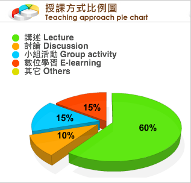

學年/學期 Academic
Year/Semester |
103 學年 第 2 學期 |
課程名稱 Course Name
781007-001 |
(中 Ch.)Ｗeb程式設計 |
| (英 Eng.)Web Programming |
| 授課教師 Instructor |
余能豪 |
| 修別 Type of Credit |
群修 |
學分數
No. of Credits |
3.0 |
| 備註 Note |
| 限學程同學方得修習。 |
| 課程大綱 Course Description |
| 本課程涵蓋網路平台之最新技術如HTML5, CSS3, Javascript, JSON, JQuery等，並介紹國內外網站及網路行銷活動範例，培養學生網頁應用程式之開發能力及資訊架構設計能力，最後能設計兼具功能與美感的動態網站。 |
| 上課進度 Class Schedule |
1. Course Introduction / Git
2. HTML5
3. CSS3 (I)
4. CSS3 (II)
5. IA - Analysis
6. Grid system / bootstrap
7. IA presentation
8. Responsive design
9. Midterm
10. Javascript (I) / DOM
11. Javascript (II) / JQuery
12. Parse / JSON
13. 校慶運動會
14. Heroku / Node.js
15. Websocket
16. Guest speaker
17. Google Analytics
18. Final demo
|
| 課程要求/評分標準 Course requirements/Grading standards |
| 課堂作業(35%) 、期中作業(20%)及期末實作成品成果展示(30%) |
參考書目 Textbook & references
（為維護智慧財產權，請務必使用正版書籍） |
| . Eric Freeman, Elisabeth Robson(2011), Head First HTML5 Programming: Building Web Apps with JavaScript, O'Reilly
. Crockford Douglas, JavaScript: The Good Parts, O'Reilly |
| 本課程附件 Course attachments |
| N/A |
